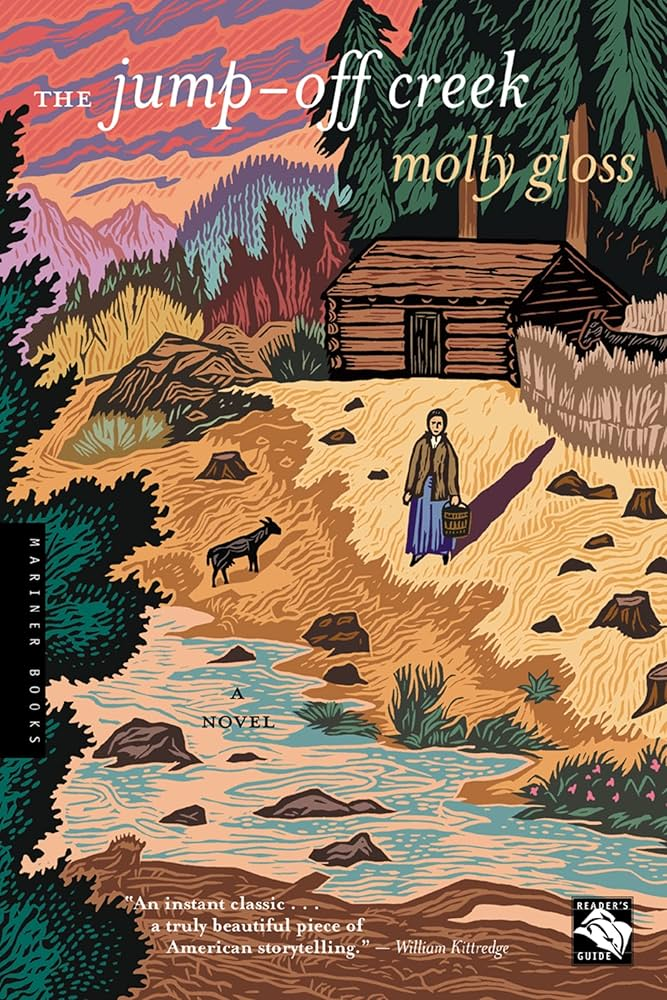

Molly Gloss, The Jump-Off Creek (1989)
Content warning:
Animal cruelty/death, violence
Synopsis
Set in the rugged and heavily forested Blue Mountains in Northeastern Oregon, The Jump-off Creek is a novel about a widow’s attempt to homestead during the 1890s. Based on published and unpublished diaries, letters, and journals, Gloss examines the realities and complexities of a woman’s pioneer life in Oregon through the main character, Lydia Bennett Sanderson.
Essay
“From the top there was a splendid view east and south to the horizon, the ranks of mountain dark and hunch-shouldered, the steep shadowed gorges parting them. She counted ridges, guessing out where the Jump-Off Creek cut its gully. But from here there were no marks of human society...” (Gloss 116).
I was initially drawn toward The Jump-Off Creek because it was premised on two things that I am, or was, unfamiliar with: homesteading and Northeast Oregon. Besides the fact that the novel is historical fiction, I chose this text as an opportunity to learn a little bit about a part of the state that I haven’t been to, and at a time that I wasn’t yet alive. However, as I jumped into the novel, I was taken aback by the ruggedness and honesty of the narrative. Molly Gloss steered away from the romanticization of the western image as she demonstrated the realistic demands of homesteading life, especially for a woman. Using Eastern Oregon as a backdrop, we follow Lydia Bennett Sanderson’s quest to make a home, or rather, survive, out of the isolated terrain in the Blue Mountains in Oregon.
Following a third-person narrative with insertions of diary entries, we are thrown into the realistic portrayal of life in Eastern Oregon as Gloss writes about the geography, climate, and the (then developing) culture of the rural community. Lydia’s early moments of settlement consisted of making and fixing fences, repairing the house, which was more like a shack, and slowly meeting her neighbors. She had mainly been interacting with a few men in the earlier part of the novel, but when she met Evelyn Walker, she seemed to develop an immediate connection with her. Even though their lives are significantly different—Evelyn is married with kids, and Lydia is a lone homesteader and widow—the development of their friendship reveals the mutual understanding about how their lives are shaped by the same environment in different ways.
The Eastern Oregon environment is an important part of the narrative because the lives of the characters essentially revolve around it; Lydia and her neighbors labor and care for animals with a quiet courage and the need to survive. The landscape's isolation also reflects the duality of independence and community, revealing Lydia’s emotional vulnerability. Among the other places in the West, she chose Jump-Off Creek, a remote area that required a journey to reach. While she came to this place to be independent and have a place to “stand under her own roof at last,” she is ironically pushed toward relationships and community because of necessity. Since there are only a few other people nearby, her relationship with other characters becomes deeply meaningful and essential.
By using the Blue Mountains as a setting, Gloss demonstrates the relationship between the land and the people. The characters’ direct contact with nature in this novel reflects the characteristics of Eastern Oregon’s geography and climate: quiet, ungentle, and unassuming all at once. The Oregon setting determines the understanding of the novel, which is what makes it Oregon literature rather than a story that just happens to be set in Oregon.
Gloss' honest writing reveals the harsh realities of survival in nature; she paints a less romanticized frontier that prioritized survival and daily labor rather than drama and adventure. After reading this book, I have developed a greater appreciation for the homesteading lifestyle and the integrity and resilience of many individuals who lived, or are living, in a similar way.
Author Bio
Born and raised in Portland, Oregon, Molly Gloss studied at Portland State College (now Portland State University) and worked as a teacher and clerk before becoming a full-time writer. Her western roots are evident in her works, many of which are based on cultural and historical diaries, letters, and journals. Molly Gloss is the author of several novels, novella, and short stories, which received various awards, such as the Oregon Book Award, PEN/Faulkner Award for Fiction, Whiting Award for Fiction, and many others.
Further Reading
Also by Molly Gloss
The Heart of Horses (2007)
- A novel about a young woman who trains wild horses in Oregon during World War I.
Falling From Horses: A Novel (2014)
- A novel about a young ranch hand who leaves his family’s ranch to pursue stunt riding in Hollywood.
